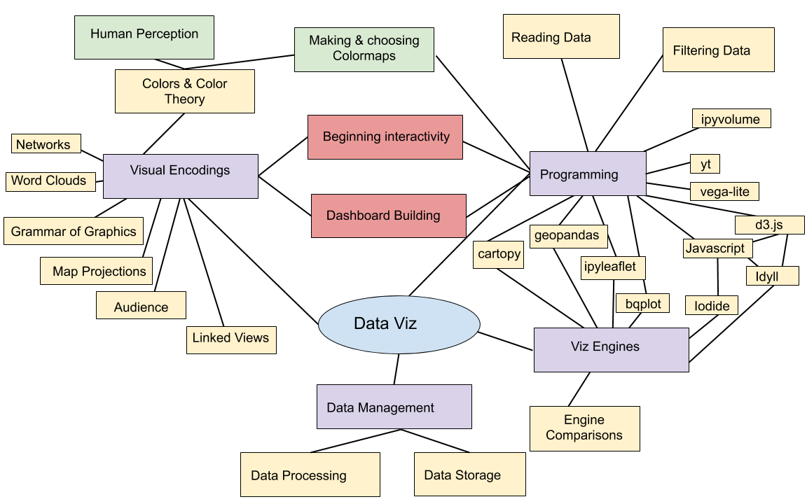
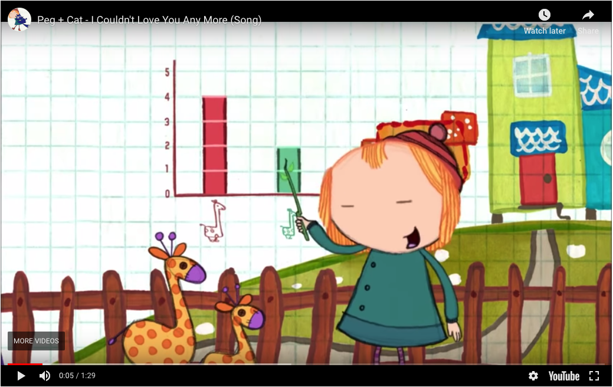
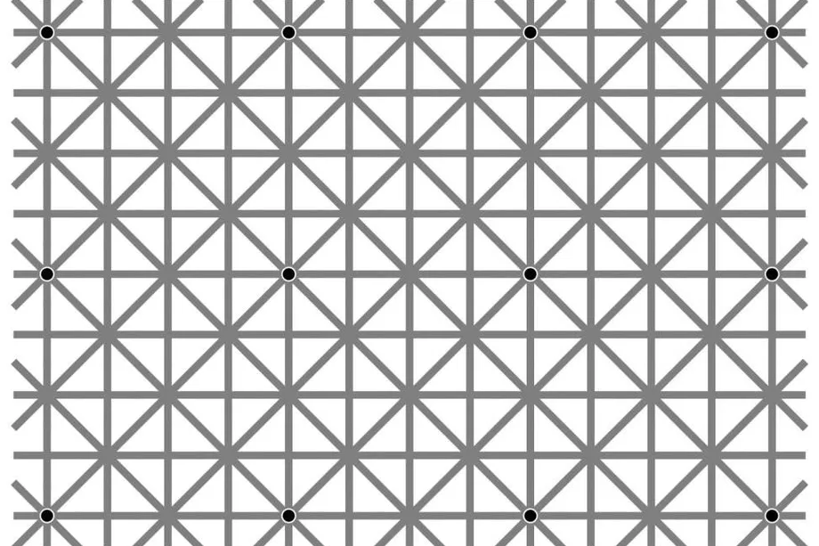

<!doctype html>
<html>
  <head>
<meta charset="utf-8">
<meta name="viewport" content="width=device-width, initial-scale=1.0, maximum-scale=1.0, user-scalable=no">

<title>Lecture 1 - Intro</title>

<link rel="stylesheet" href="https://cdnjs.cloudflare.com/ajax/libs/reveal.js/3.6.0/css/reveal.css">
<link rel="stylesheet" href="https://cdnjs.cloudflare.com/ajax/libs/reveal.js/3.6.0/css/theme/white.min.css">
<link rel="stylesheet" href="https://maxcdn.bootstrapcdn.com/font-awesome/4.5.0/css/font-awesome.min.css">

<!-- Theme used for syntax highlighting of code -->
<link rel="stylesheet" href="https://cdnjs.cloudflare.com/ajax/libs/highlight.js/9.12.0/styles/github.min.css">
<link href="https://fonts.googleapis.com/css?family=Questrial" rel="stylesheet">

<!-- Printing and PDF exports -->
<script>
    var link = document.createElement( 'link' );
    link.rel = 'stylesheet';
    link.type = 'text/css';
    link.href = window.location.search.match( /print-pdf/gi ) ?  '/revealjs/css/print/pdf.css' : '/revealjs/css/print/paper.css';
    document.getElementsByTagName( 'head' )[0].appendChild( link );
</script>
<script src="https://cdnjs.cloudflare.com/ajax/libs/reveal.js/3.6.0/lib/js/head.min.js"></script>
<script src="https://cdnjs.cloudflare.com/ajax/libs/reveal.js/3.6.0/js/reveal.min.js"></script>


<style type="text/css">
.reveal section.present {
  text-align: left;
}
.centered {
  text-align: center;
}
.reveal {
  font-size: 30px;
  font-family: 'Questrial', sans-serif;
}
.reveal section img {
  box-shadow: none;
  border: 0px;
  display: block;
  margin-left: auto;
  margin-right: auto;
}
.reveal bigtext {
  font-size: 800%;
}

.reveal h1, .reveal h2, .reveal h3 {
  text-transform: none;
}

.reveal .titleslide h1 {
  text-align: center;
}
.reveal .titleslide h2 {
  text-align: right;
}

.vertical_center section {
  vertical-align: middle;
}

.left_abs {
  left:0%;
  text-align: left;
  float: left;
  width:50%;
  z-index:-10;
}

.left {
  left:-8.33%;
  text-align: left;
  float: left;
  width:50%;
  z-index:-10;
}

.right {
  left:31.25%;
  top: 75px;
  float: right;
  text-align: right;
  z-index:-10;
  width:50%;
}

.reveal table td {
  text-align: left;
  padding: 0.2em 0.5em 0.2em 0.5em;
  border: solid; 
}

.reveal table tbody tr:last-child th,
.reveal table tbody tr:last-child td {
  border-bottom: solid; }

.reveal .table-hl {
  background: #aaa;
}


</style>
  </head>

  <body>
    <div class="reveal">
      <div class="slides">
        <section data-markdown
           data-separator="^\n---\n"
           data-separator-vertical="^\n----\n"
           data-separator-notes="notes?:"
           >
          <script type="text/template">
<!-- .slide: class="titleslide" -->

# Intro to Programming & Data Viz
<div style="height: 6.0em;"></div>
## Jill P. Naiman
## Summer 2020
## Lecture 1

---
<!-- .slide: class="vertical_center" -->
## Basics

12-3PM M/T/W/Th/F

Jill Naiman - `jnaiman@illinois.edu` or `jill.naiman@cfa.harvard.edu`

 * Office Hours: TBD

TA: TBD

Class webpage: https://jnaiman.github.io/csci-p-14110_su2020/ (more on this a little later)

notes: we'll go over the class webpage a little more in a few slides

---

# Housekeeping

1. Don't skip class
1. Don't be late
1. No +1's in class
1. Appropriate Zoom backgrounds only

notes:
I'm required by Harvard policy to "report" students that are more than 15min late to class.  If LIFE happens and you have to miss a class let me know ASAP so I can coordinate with you/Harvard about it

while its Harvard policy that only *you* can be in the class, the majority of the materials are open source, so anybody can access them

---

## Questions:

* Who are you?
* What are we doing?
* How are we going to do it?

---

## Questions:

* <span style="color:red">Who are you?</span>
* What are we doing?
* How are we going to do it?

---

### My background

<!---->


notes: so my PhD is in theoretical and computational astrophysics

here is a picture of a simulation I worked on

---

### My background


notes: here I've highlighted a few things - the purple is this stuff called "dark matter" which makes up about 95% of our universe

the orange stuff are concentrations of gas where galaxies form


---

### My background


notes: if you looked deep within these centers of gas you'd find galaxies forming

Here are some pictures of "fake" galaxies that this simulation produced

BE AWARE: the basic numerical technqiues used in this large simulation, including how these images are made, are thing we will cover in this very class!

---

### My background
#### ytini.com


Naiman et al. 2017, Borkiewicz et al. 2018

notes: I've also worked for the past several years with folks at the Advanced Visualization Laboratory at the National Center for Supercomputing Applications at the University of Illinois

These are computer scientists and visual effects artists that make a lot of scientific documentaries and IMAX shows

Here is an example of how the process of taking a simulation box and making an image works

---

### My background
#### ytini.com


Naiman et al. 2017, Borkiewicz et al. 2018

notes: in this class we will discuss how to make images of our simulation and what goes into this process - how can we use colors to highlight different aspects of our simulation?  These sorts of questions we'll answer in the 2nd week of class

---

### My background
#### ytini.com


Naiman et al. 2017, Borkiewicz et al. 2018

notes: here are just some gratiuitus pretty images that the advanced visualization lab made

---

### My background
#### ytini.com


Naiman et al. 2017, Borkiewicz et al. 2018

---

## Timed activity! (~3 minutes)

Quick breakout group:
1. Introduce yourself - what is your name and where are you from?
1. What is your favorite math/science/data viz topic?

notes: I realize this is a little hokey, but we do really need to get to know eachother!


---

## Questions:

* Who are you?
* What are we doing?
* How are we going to do it?

---

## Questions:

* ~~Who are you?~~
* <span style="color:red">What are we doing?</span>
* How are we going to do it?

---

## What are we doing?

Essentially:

<iframe width="560" height="315" src="https://www.youtube.com/embed/o2lRpiediP8?start=340" frameborder="0" allow="accelerometer; autoplay; encrypted-media; gyroscope; picture-in-picture" allowfullscreen></iframe>

This is an example of "SciViz".

The movie was created in AVL using visualization methods we will make use of in week 2 (our's won't be as polished, but this viz was built by a team of experts!).

notes: essentially, we'll be doing this, more or less

The data for this movie is generated from something called an SPH simulation - SPH stands for smooth particle hydordynamics and is basically a way to simulate physics in a computer.

The data outputs from this simulation are scientific in nature - so things like particle temperature, velocity, location, but translating that into colors and shapes is the job of the visualization expert - we'll start thinking about methods to do just that in the 2nd week of this class.

---

## What are we doing?

Essentially:


notes:
this is an example of "InfoViz" while the previous example was "sciviz"

We'll talk about how to build interactive python code to inspect data as well

this is example is the "wealth of nations plot" thats fairly famous in info-viz settings

---

## What are we doing?

<div>
<div style="float:left;width:48%;margin-right:14px;" class="sketchfab-embed-wrapper"><iframe width="400" height="300" src="https://sketchfab.com/models/ece18031ea59414f8b4a506a7d45a62e/embed" frameborder="0" allow="autoplay; fullscreen; vr" mozallowfullscreen="true" webkitallowfullscreen="true"></iframe>

<p style="font-size: 13px; font-weight: normal; margin: 5px; color: #4A4A4A;">
    <a href="https://sketchfab.com/3d-models/my-solar-system-ece18031ea59414f8b4a506a7d45a62e?utm_medium=embed&utm_source=website&utm_campaign=share-popup" target="_blank" style="font-weight: bold; color: #1CAAD9;">My Solar System</a>
    by <a href="https://sketchfab.com/jnaiman?utm_medium=embed&utm_source=website&utm_campaign=share-popup" target="_blank" style="font-weight: bold; color: #1CAAD9;">jnaiman</a>
    on <a href="https://sketchfab.com?utm_medium=embed&utm_source=website&utm_campaign=share-popup" target="_blank" style="font-weight: bold; color: #1CAAD9;">Sketchfab</a>
</p>
</div>

<div style="float:left;width:48%;" class="sketchfab-embed-wrapper"><iframe width="400" height="300" src="https://sketchfab.com/models/d9edf3cc17d94039b4272dd2563e41e9/embed" frameborder="0" allow="autoplay; fullscreen; vr" mozallowfullscreen="true" webkitallowfullscreen="true"></iframe>

<p style="font-size: 13px; font-weight: normal; margin: 5px; color: #4A4A4A;">
    <a href="https://sketchfab.com/3d-models/galaxy-merger-model-d9edf3cc17d94039b4272dd2563e41e9?utm_medium=embed&utm_source=website&utm_campaign=share-popup" target="_blank" style="font-weight: bold; color: #1CAAD9;">Galaxy Merger Model</a>
    by <a href="https://sketchfab.com/jnaiman?utm_medium=embed&utm_source=website&utm_campaign=share-popup" target="_blank" style="font-weight: bold; color: #1CAAD9;">jnaiman</a>
    on <a href="https://sketchfab.com?utm_medium=embed&utm_source=website&utm_campaign=share-popup" target="_blank" style="font-weight: bold; color: #1CAAD9;">Sketchfab</a>
</p>
</div>

</div>

<div style=”clear:both;height:1em;”>

<p>

<br/><br/>

We'll start off simply with Info & Sci viz and end class by extending the complexity of our [models](https://sketchfab.com/3d-models/solar-sistem-00c2fd1b0cf74846b540c3c4b95e7f6b) to publish on the web.

</p>

</div>

notes: we'll end the class by publishing some 3D movies to the web

Here I'm just showing similar examples with a (hopefully) familiar planetary system and a galaxy simulation I worked with a little while ago


---

## What are we doing?

To do this, we need to know the following things:

---

## What are we doing?

To do this, we need to know the following things:

1. Programming: 
 * the basics - what is programming?  calculations, variables, flow control, functions, and beyond!
 * how to use code to read and process data
 * how to use code to translate our data into neat visualizations (images, movies, and on the web)
 
notes:

Folks have a variety of coding backgrounds as well - this is also great!
 * we'll go over some basics of coding practices the first few days - again, this will be review for some and totally new for others and that is totally fine!

---

## What are we doing?

To do this, we need to know the following things:

1. Programming: 
 * the basics - what is programming?  calculations, variables, flow control, functions, and beyond!
 * how to use code to read and process data
 * how to use code to translate our data into neat visualizations (images, movies, and on the web)
1. Visualization principles
 * color theory, human perception
 * viz engines
 * publishing
 
notes:

we also need to know a bit of a background of data visualization, things like color theory and how humans encode data as visual information 

---

## What are we doing?

To do this, we need to know the following things:

2. Visualization principles
 * color theory, human perception
 * viz engines
 * publishing
 


notes:

for reference, here is the sort of "diagram" for a dataviz course I taught last semester

this was a grad class, so we won't cover all of this (don't freak out), but you can see how many things the 
topic of "dataviz" covers - from data managment, to human perception, to programming, to data encodings

so, the "viz" part of data viz will seem like a lot of loosely connected things because it is!

---

## Questions:

* Who are you?
* What are we doing?
* How are we going to do it?

---

## Questions:

* ~~Who are you?~~
* ~~What are we doing?~~
* <span style="color:red">How are we going to do it?</span>

notes: ok, we've gone over the who and the what, now lets get to the "how" - what resources are we going to make use of for this project?

---

## Resources:

1. Class webpage: https://jnaiman.github.io/csci-p-14110_su2020/ 
   * lecture slides, coding "notebooks", reading outline, external resources

notes: go through website!!

highlights:
* syllabus with links to books
* references like python & matplotlib
* cheat sheets ofr markdown and jupyter
* slack channel
* lessons -> go to lesson 1
  * lesson plans will give overviews of what we are doing that day at the top, then any resources (installation notes today), and then materials like lecture slides & notebooks will be linked at the bottom

---

## Resources:
1. Class webpage: https://jnaiman.github.io/csci-p-14110_su2020/ 
   * lecture slides, coding "notebooks", reading outline, external resources
1. Texts
   * Py4E: [Python for Everybody](https://www.py4e.com/book.php), HTML version [is linked right here](https://www.py4e.com/html3/)
   * FDV: <a href="https://serialmentor.com/dataviz/">Fundamentals of Data Visualization</a> 
   * Additional reading assigned by week, Optional/follow up books


notes: 
our two main books are Py4E (Python for Everybody) and FDV (Fundamentals of Data Visualization)

they are both free and available online

**go through how to get to them!**

Reading quizzes are based on these books, reading will be listed in quiz and/or assignment for each week as well as on the syllabus 
(may shift a little)

I've also listed a few optional textbooks that you can buy if you get really into this design & data viz stuff and want to learn more about 
the theory behind a lot of what we are talking about in this class in brief.

---

## Resources:
1. Class webpage: https://jnaiman.github.io/csci-p-14110_su2020/ 
   * lecture slides, coding "notebooks", reading outline, external resources
1. Texts
   * Py4E: [Python for Everybody](https://www.py4e.com/book.php), HTML version [is linked right here](https://www.py4e.com/html3/)
   * FDV: <a href="https://serialmentor.com/dataviz/">Fundamentals of Data Visualization</a> 
   * Additional reading assigned by week, Optional/follow up books
1. Canvas Page: https://canvas.harvard.edu/courses/72794
   * This is where quizzes and homeworks will be assigned and turned in.

notes: Homework & quizzes will be turned in on the canvas webpage

---

## Resources:

1. Class webpage: https://jnaiman.github.io/csci-p-14110_su2020/ 
   * lecture slides, coding "notebooks", reading outline, external resources
1. Texts
   * Py4E: [Python for Everybody](https://www.py4e.com/book.php), HTML version [is linked right here](https://www.py4e.com/html3/)
   * FDV: <a href="https://serialmentor.com/dataviz/">Fundamentals of Data Visualization</a> 
   * Additional reading assigned by week, Optional/follow up books
1. Canvas Page: https://canvas.harvard.edu/courses/72794
   * This is where quizzes and homeworks will be assigned and turned in.
1. Anaconda: [https://www.anaconda.com/distribution/#download-section](https://www.anaconda.com/distribution/#download-section)
   * For now - just download this file, we'll talk about how to use it later in class
   * __Make sure you download Python version 3 not 2!!__
   
notes: We will be using the Anaconda package manager to install the programming language Python as well as any additional libraries we might need, as well as to launch jupyter pages with

If all those words seem confusing to you, don't worry!  We'll go over them more later in class

Right now - please go to the webpage listed and download Anaconda for Python 3 (should say 3.7 or something like this)

We'll go over how to install later in class, but lets all get it downloaded first since it may take a while


---

## Resources:

1. Class webpage: https://jnaiman.github.io/csci-p-14110_su2020/ 
   * lecture slides, coding "notebooks", reading outline, external resources
1. Texts
   * Py4E: [Python for Everybody](https://www.py4e.com/book.php), HTML version [is linked right here](https://www.py4e.com/html3/)
   * FDV: <a href="https://serialmentor.com/dataviz/">Fundamentals of Data Visualization</a> 
   * Additional reading assigned by week, Optional/follow up books
1. Canvas Page: https://canvas.harvard.edu/courses/72794
   * This is where quizzes and homeworks will be assigned and turned in.
1. Anaconda: [https://www.anaconda.com/distribution/#download-section](https://www.anaconda.com/distribution/#download-section)
   * For now - just download this file, we'll talk about how to use it later in class
   * __Make sure you download Python version 3 not 2!!__
1. Slack channel: TBD
   * Use as professional adults

notes: We'll also have a slack channel - use this as adults, so no bad words, no put-downs, etc

---

## Slack 

 * Use the `@` sign appropriately: `@[person]`, `@here`, `@channel`
 * Web client, standalone client and mobile devices can access this team.
 * At the end of the course, the team will be discontinued.
 * Please think carefully before direct messaging if you could ask in a public
   forum instead.
 * Conduct will be held to same standards as any educational venue.

notes:
Please use slack as much as you need!  You can use it to share items and
articles with the class, to collaborate, to discuss and ask questions and get
feedback.  However, please do behave in a professional fashion.

---

## Class outline: Syllabus

### Intro to Programming and Data Viz Week

 * Day 1: Introduction, syllabus, examples, and some basics variables in Python
 * Day 2: Programming: flow control & beginning plots
 * Day 3: Programming: data storage, functions and more plots
 * Day 4: Intro to data viz, more complex plots
 * Day 5: Holiday!

---

## Class outline: Syllabus

### Intro to Programming and Data Viz Week

 * Day 1: Introduction, syllabus, examples, and some basics variables in Python
 * Day 2: Programming: flow control & beginning plots
 * Day 3: Programming: data storage, functions and more plots
 * Day 4: Intro to data viz, more complex plots
 * Day 5: Holiday!
 
### Data Visualization Week

 * Day 6: Color theory, simple 2D movies, interactivity
 * Day 7: Info viz and more on interactivity in 2D
 * Day 8: Visual encodings, Interactive 2D movies
 * Day 9: Graphic concepts, web-viz, 3D geometries
 * Day 10: Web-viz, where to go from here and mini viz party!

notes: this schedule is a little "loose" - i.e. we have some time to go 
into more/less details on things that folks are not into/super interested in

---

## Class outline: Syllabus

### Day structure

First "half":
 * Lecture style covering concepts
 * Programming/Data Viz practice problems
 * HW discussions
 
Second "half":
 * Hands-on programming
 * ~~Group programming~~ Extended Office Hours

notes:
Also, we'll in general have morning sessions devoted to physics/math/astro/viz concepts, and this will be more "lecture style"

In the afternoon's we'll do more hands-on coding. Usually we'd do group work, but we'll have to get a little creative with this because group work gets a bit tough online!

See that i've got "half" in quotes - this is because somedays (like today) will be more lecture heavy, while others will be more programming heavy - this will espeically be true as we move later in the week and you're all working on projects

---

## Teaching philosophy

 * Non-competative, group learning environment
 * There are no "lone wolfs" in science - [Path to Newton](https://drive.google.com/file/d/1-WSmMd7TJsWeNAZB_wZYeemlLnkRFuHa/view)
   * More info here: https://predictionx.org/path_to_newton
 * Inquiry based approach to learning - basically, we are actually going to do a lot of hands-on programming!

---

# The Things I Want You To Take Away
1. Coding is not magic
1. There are a variety of methods and codes to use for data viz 
1. There are a variety of systems, tools, and ecosystems available for visualizing data
1. How not to lie with data viz (and how to detect when someone is lying to you!)
1. How to share data/scientific results online with data viz tools


---

## Assignments: **Posted on Canvas**

 * Daily, assigned in class, collected following class 
 * These will consist of prose, math, reading, and coding assignments
 * There will also be a reading quizzes each day (on the Canvas webpage)

---

## Assignments: **Posted on Canvas**

 * Daily, assigned in class, collected following class 
 * These will consist of prose, math, reading, and coding assignments
 * There will also be a reading quizzes each day (on the Canvas webpage)
 
Some assignments or parts of assignments are meant to be done on your own, others can be done collaboratively - but make sure you turn in work that is in your own words!

---

## Assignments: **Posted on Canvas**

 * Daily, assigned in class, collected following class 
 * These will consist of prose, math, reading, and coding assignments
 * There will also be a reading quizzes each day (on the Canvas webpage)
 
Some assignments or parts of assignments are meant to be done on your own, others can be done collaboratively - but make sure you turn in work that is in your own words!

**We will "drop" one assignment.**

notes:
given that these are tough times to be learning in we should have a bit of flexibility here and we are going to "drop" your lowest HW score.  This can be a HW that you just couldn't give your all to or one you wanted to skip altogether.  We'll replace this score "by hand" at the end of the course with a 100% grade.

---

## Plagiarism

 * Plagiarism is about copying ideas.
 * Cite all code you utilize from elsewhere.

notes:
When programming, I expect that you will do things like search on the internet
to find help with a given problem.  This is fine.

But, you *must* cite where any code snippets came from.  And you *must* note if
you are working with other people in the group!

Using snippets of code is fine -- but you may not copy large-scale amounts of
code from other work (for example, other visualizations) and pass it off as
your own.  Always cite, and be reasonable in what you utilize.

---

## Our tools

 * Python
 * Jupyter and Jupyter notebooks (maybe on a Jupyterhub)
 * The occasional usage of a shell such as bash
 * Slack

notes:
You will be expected to write code in Python.  Slack will be used for communications.

We'll also cover a bit of javascript, html for online viz, but that will mostly be "for your interest" and not something you need to dig deep into.


---

## Github (not required, but just FYI)

 * Course repo is at [https://github.com/jnaiman/csci-p-14110\_su2020](https://jnaiman.github.io/csci-p-14110_su2020/)
 * Automatically built to [https://jnaiman.github.io/csci-p-14110\_su2020/](https://jnaiman.github.io/csci-p-14110_su2020/)
 
Last year's:
 * Course repo is at [https://github.com/jnaiman/csci-p-14110\_su2019](https://jnaiman.github.io/csci-p-14110_su2019/)
 * Automatically built to [https://jnaiman.github.io/csci-p-14110\_su2019/](https://jnaiman.github.io/csci-p-14110_su2019/)


notes:
All the materials for this course will be stored in github, and are available
under a very permissive license.  It is largely written in markdown and
automatically compiled to web pages when changes are made.

You are invited to clone the repo, fork and submit changes (typos, etc!), and
to use any information in it in the future.

I've also posted a link to last years course webpage if you want to take a gander, but a lot of stuff has changed since last time - namely that we are forgoing a lot of the physics stuff in favor of using a wider range of datasets

---

# Speaking of that course webpage...

[https://jnaiman.github.io/csci-p-14110\_su2020/](https://jnaiman.github.io/csci-p-14110_su2020/)

notes: *go to webpage*

1. Main page - populated with overall references & lessons for each day
1. Syllabus
1. Lesson 1 page: each day will be different, this day has some installation notes & videos, extra resources for the topics we'll be covering today and tomorrow
1. at the end of each page there is the "Materials" section - this is where you can see the lecture slides and any notebooks we create during class

---

## Questions:

* Who are you?
* What are we doing?
* How are we going to do it?

---

## Questions:

* ~~Who are you?~~
* ~~What are we doing?~~
* ~~How are we going to do it?~~

notes: so now we've covered all our who what hows! Lets get into the first bit of knowledge that we need - a bit of background about astronomy

A lot of this might be review for folks, but its good that we all have the same basic knowledge about exactly where we are in space and time.

---

<br />
<br />
<br />

# A pre-intro to Data Viz

notes:
we'll cover more on this after we've got some programming under our belt, but let's think a bit about these concepts now

---

### Why any data viz course will feel a little weird


notes:

so I showed a similar diagram from my semester long grad class, but here's another way to look at all of the overlapping areas of data viz!

there is a *huge* overlay of topics that cover data viz - from the neurology of how your prefrontal cortex process information, to how humans process storytelling, to data analytics, and color theory and the list goes on!

---

## Start thinking about

 * What is a visualization?
 * Why do we visualize?
 * What types of data do we visualize?
 * How do we visualize?


notes:
We're going to start out at a very high-level, discussing why we choose to
visualize versus other types of representation, what types of data, and how we
might do it.

---

## What is a visualization anyway?

"Computer-based *visualization* systems provide visual representations of datasets designed to help people carry out tasks more effectively."

   * Visualization Analysis & Design, Tamara Munzner

notes:
I really like this definition because it gives us a sense of purpose - i.e. that our visualization must help a human with a task that has to do with data.

---

## What is a visualization anyway?

"Computer-based *visualization* systems provide visual representations of datasets designed to help people carry out tasks more effectively."

   * Visualization Analysis & Design, Tamara Munzner

Data Viz is task oriented:


notes:
here for example, we might want to know the labels of bones or how they fit together

---

## What is a visualization anyway?

"Computer-based *visualization* systems provide visual representations of datasets designed to help people carry out tasks more effectively."

   * Visualization Analysis & Design, Tamara Munzner

... versus artistic representations used to convey emotions:


---

## What is a visualization anyway?

"Computer-based *visualization* systems provide visual representations of datasets designed to help people carry out tasks more effectively."

   * Visualization Analysis & Design, Tamara Munzner

... versus movies, comics, or other cinematic representations used to tell stories:


---

# Why?

(Or rather, why _wouldn't_ we visualize?)

notes:
Not everything suits itself to visualization -- and part of the reason for that
is the necessary reductionism that visualization can require.

---

# We can't visualize everything

Peg + Cat:
https://www.youtube.com/embed/In72QAQJ1tY?rel=0

notes:
"There are lots of thing you can compare on a graph / Like who is the shortest
or the tallest giraffe / You can chart how much you walk / How much that you
laugh / There are lots of things you can compare on a graph"

"But the one thing you can't chart / Is how you feel in your heart"

---

# We can't visualize everything

Peg + Cat:
https://www.youtube.com/embed/In72QAQJ1tY?rel=0



"There are lots of thing you can compare on a graph / Like who is the shortest
or the tallest giraffe..."

notes:
"There are lots of thing you can compare on a graph / Like who is the shortest
or the tallest giraffe / You can chart how much you walk / How much that you
laugh / There are lots of things you can compare on a graph"

"But the one thing you can't chart / Is how you feel in your heart"

---

# We can't visualize everything

Peg + Cat:
https://www.youtube.com/embed/In72QAQJ1tY?rel=0


"But the one thing you can't chart / Is how you feel in your heart"

notes:
"There are lots of thing you can compare on a graph / Like who is the shortest
or the tallest giraffe / You can chart how much you walk / How much that you
laugh / There are lots of things you can compare on a graph"

"But the one thing you can't chart / Is how you feel in your heart"

---

# We can't visualize everything


notes:
for example, here is a haptic, or touch based "visualization" for the blind & visually impaired

---

# We can't visualize everything


notes:
you should check it out, because its a thing we are also not going to cover!

---

<!-- .slide: data-background-image="images/fov.svg" data-background-size="contain" -->

notes:
Visual information is communicated through our eyes, where it is processed.  At
the most basic level, we can see a range of about 210 degrees horizontally with
one or both eyes.  The region that is covered by both ("binocular") is about
114 degrees in extent.

You can only cram so much information into the human eye.

---


By Vanessa Ezekowitz [CC BY-SA 3.0](https://creativecommons.org/licenses/by-sa/3.0), via Wikimedia Commons

notes:
When we think about visual communication of information, we *must* think about
how human physiology interacts with that communication.

Also, fair warning: I'm not a medical doctor.

This diagram shows the visual acuity of a "standard" human eye, as a function
of angular distance from the fovea.  We have to think about this in
*conjunction* with our field of view.

---

# Your brain does interpolation



There are 12 dots, can you count them all at the same time?

---

# Your brain does interpolation


Step 1: Look at the cross

Step 2: Close left eye, keep looking at the cross

Step 3: Slowly move your head toward & away from screen until dot disappears

---

# Your brain does interpolation


Step 1: Look at the cross

Step 2: Close left eye, keep looking at the cross

Step 3: Slowly move your head toward & away from screen until dot disappears

# ... and sometimes it gets it wrong!

---

# Even so, the visual cortex is great for information transfer

Your visual cortex is processing information from different parts of this page AT THE SAME TIME which means it can do impressive things very quickly.


---

Can you spot the differences?


notes:
compare this to how long it would take to spot differences in 2 songs - you'd have to listen to both songs (probably more than once) and compare after!  This would be sequential rather than parallel data transfer!

---

Can you spot the differences?

<!-- [Moonlight Sonota, 1](https://www.youtube.com/watch?v=4591dCHe_sE) -->
<!-- [Moonlight Sonota, 2](https://www.youtube.com/watch?v=4Tr0otuiQuU) -->

* [Moonlight Sonota, 1](https://soundcloud.com/redreapergrell/beethoven-moonlight-sonata)
* [Moonlight Sonota, 2](https://soundcloud.com/user-37232775/sets/beethoven-moonlight-sonata)

Try doing the same thing with these on your own!

notes:
time this activity, give them 1.5 minutes

ask: how long did this take you?  How many differences were there?
I spotted tempo as one (but you can cheat by looking at the timer on the bottom!)

Also, you can look at how different each of the sound-bars are on each link and see how different the music looks visually!

---

# Visualization augments human data analysis capabilities

 * enhances our ability to pattern find
 * allows us to summarize data quickly
 * allows us to search our data quickly

---

## Anscombe's Quartet

This famous example show's 4 datasets with the exact same mean, varience and correlation coefficient.


Statistics can be useful, but visualization generated context!

---

## Same thing but with a dinosaur


Statistics can be useful, but visualization generated context!

---

<br />
<br />
<br />

# A few final considerations.

---

# Who are you visualizing for?

* For yourself?
* For a peer?
* For someone else?

notes:
*Whenever* you build a visualization you need to think about the context that
you can assume on the part of your viewer.

We will talk about how your viz changes with audience in this course.

---

# Tenet 1:

"Visualizing data" is not a strict subset of "making an image."

 * Collection of the data
 * Organization of that data
 * Representation of that data

notes:
We will approach visualization as encompassing several different stages in the
collection, organization and representation of data.

---

# Tenet 2:

We tell lies to visualize, but we _must_ be honest.

 * No representation is going to convey the entire complexity of a dataset.
 * Some representations are better than others.

---

<!-- .slide: data-background-image="images/gunDeaths.jpg" data-background-size="contain" -->

notes:
Here's a pretty brazen example of how to lie with viz. I'll give you a minute to analyze this and tell me what's wrong with this graph.

Some people will claim the Y-axis should always start from the bottom - at zero - to avoid confusion.

---

<!-- .slide: data-background-image="images/keelingCurve.svg" data-background-size="contain" -->

notes:
however, the Keeling Curve is an interesting counter-argument. This is the famous graph that was the original evidence for global warming, showing the rate at which atmospheric carbon dioxide was growing. 

Does anyone know why it's generally accepted to show the y-axis like this, without it starting at the zero axis?

---


## First glance at programming

To do coding-related anything with a computer, we need to understand some basics of programming - so let's got to it!

notes: now we will start with some basics of how to install/open things and learn some basics of data structures

This will be review for folks who have done some programming before, and it will seem strange and new.  Both things are ok!  Everybody can learn something new here.

---

# To Python!

notes: *now open up python part 1*

---

---

# Notes on HW & Quizzes

* Reading quizzes due before class (so you have 2 tonight, but the 2nd is due later tomorrow)
* Homework due before *next* class

notes:
go to HW - 2 parts, one written (yes its hokey, but important)

now we'll have time to install stuff!

also ask me questions!


          </script>
        </section>
      </div>
    </div>
<script>
    // More info about config & dependencies:
    // - https://github.com/hakimel/reveal.js#configuration
    // - https://github.com/hakimel/reveal.js#dependencies
    Reveal.initialize({
        dependencies: [
            { src: 'https://cdnjs.cloudflare.com/ajax/libs/reveal.js/3.6.0/plugin/markdown/marked.js' },
            { src: 'https://cdnjs.cloudflare.com/ajax/libs/reveal.js/3.6.0/plugin/markdown/markdown.min.js' },
            { src: 'https://cdnjs.cloudflare.com/ajax/libs/reveal.js/3.6.0/plugin/notes/notes.min.js', async: true },
            { src: 'https://cdnjs.cloudflare.com/ajax/libs/reveal.js/3.6.0/plugin/highlight/highlight.min.js', async: true, callback: function() { hljs.initHighlightingOnLoad(); } },
            { src: '/reveal.js-plugins/chalkboard/chalkboard.js' },
            { src: 'https://cdnjs.cloudflare.com/ajax/libs/reveal.js/3.6.0/plugin/math/math.min.js', async: true }
        ],
		keyboard: {
			67: function() { RevealChalkboard.toggleNotesCanvas() },	// toggle notes canvas when 'c' is pressed
			66: function() { RevealChalkboard.toggleChalkboard() },	// toggle chalkboard when 'b' is pressed
			46: function() { RevealChalkboard.clear() },	// clear chalkboard when 'DEL' is pressed
			 8: function() { RevealChalkboard.reset() },	// reset chalkboard data on current slide when 'BACKSPACE' is pressed
			68: function() { RevealChalkboard.download() },	// downlad recorded chalkboard drawing when 'd' is pressed
		},
        center: false,
        transition: 'none',
        backgroundTransition: 'none',
        showNotes: true,
        progress: false,
	slideNumber: true,

    });
</script>
  </body>
</html>

